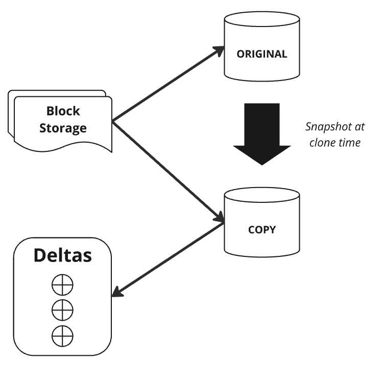

flowchart TD A(Organisation) --> B1(Account 1) A(Organisation) --> B2(Account 2) B1 --> C1(Users) B1 --> C2(Roles) B1 --> C3(Databases) B1 --> C4(Warehouses) B1 --> C5(Other account objects) C3 --> D1(Schemas) D1 --> E1(UDFs) D1 --> E2(Views) D1 --> E3(Tables) D1 --> E4(Stages) D1 --> E5(Other database objects)
1. Overview
The Snowsight interface is the GUI through which we interact with Snowflake.
When querying a Snowflake table, a fully qualified table name means database_name + schema_name + table_name. For example, “DERIVED_DB.PUBLIC.TRADES_DATA”
Worksheets are associated with a role.
A warehouse is needed for compute to execute a query.
Snowflake is a “self-managed cloud data platform”. It is cloud only. No on premise option.
“Self-managed” service means:
- No hardware
- No software
- No maintenance
“Data platform” means it can function as:
- Data warehouse
- Data lake - mix of structured and semi structured data
- Data science - use your preferred language via Snowpark
2. Snowflake Architecture
2.2. Layers of Snowflake
There are three distinct layers of Snowflake:
- Database storage
- Compressed columnar storage.
- This is stored as blobs in AWS, Azure, GCP etc.
- Snowflake abstracts this away so we just interact with it like a table.
- This is optimised for OLAP (analytical purposes) which is read-heavy, rather than OLTP which is write-heavy.
- Compute
- “The muscle of the system”.
- Query processing.
- Queries are processed using “virtual warehouses”. These are massive parallel processing compute clusters, e.g. EC2 on AWS.
- Cloud services
- “The brain of the system”.
- Collection of services to manage and coordinate components, e.g. the S3 and EC2 instances used in the other two layers.
- The cloud services layer also runs on a compute instance of the cloud provider and is completely handled by Snowflake.
- This layer handles: authentication, access control, metadata management, infrastructure management, query parsing and optimisation. The query execution happens in the compute layer.
2.3. Loading Data into Snowflake
This is covered more extensivelyt in its own section, but this sub-section serves as a brief introduction.
The usual SQL commands can be used to create databases and tables.
CREATE DATABASE myfirstdb
ALTER DATABASE myfirstdb RENAME firstdb
CREATE TABLE loan_payments (
col1 string,
col2 string,
);We can specify a database to use with the USE DATABASE command to switch the active database. This avoids having to use the fully qualified table name everywhere.
USE DATABASE firstdb
COPY INTO loan_payments
FROM s3/… -- The URL to copy from
file_format = (delimiter = “,”,
skip rows=1,
type=csv);2.4. Snowflake Editions
The different Snowflake editions vary by features and pricing. The feature matrix is available on the Snowflake docs.
- Standard
- Complete DWH, automatic data encryption, support for standard and special data types, time travel 1 day, disaster recovery for 7 days beyond time travel, network policies, federated auth and SSO, 24/7 support
- Enterprise
- Multi cluster warehouse, time travel 90 days, materialised views, search optimisation, column-level security, 24 hour early access to new releases
- Business critical
- Additional security features such as customer managed encryption, support for data specific regulation, database failover and fallback
- Virtual private
- Dedicated virtual servers and warehouse, dedicated metadata store. Isolated from all other snowflake accounts.
2.5. Compute Costs
2.5.1. Overview of Cost Categories
Compute costs and storage costs are decoupled and can be scaled separately. “Pay for what you need”.
- Active warehouses
- Used for standard query processing.
- Billed per second (minimum 1 minute).
- Depends on size of warehouse, time and number of warehouses.
- Cloud services
- Behind-the-scenes cloud service tasks.
- Only charged if >10% of warehouse consumption, which is not the case for most customers.
- Serverless
- Used for search optimisation and Snowpipe.
- This is compute that is managed by snowflake, e.g. event-based processing.
These are charged in Snowflake credits.
2.5.2. Calculating Number of Credits Consumed-
The warehouses consume the following number of credits per hour:
| Warehouse Size | Number of Credits |
|---|---|
| XS | 1 |
| S | 2 |
| M | 4 |
| L | 8 |
| XL | 16 |
| 4XL | 128 |
Credits cost different amounts per edition. It also depends on the cloud provider (AWS) and region (US-East-1). Indicative costs for AWS US-East-1 are:
| Edition | $ / Credit |
|---|---|
| Standard | 2 |
| Enterprise | 3 |
| Business Critical | 4 |
2.6 Storage and Data Costs
2.6.1. Storage Types and Costs
Monthly storage costs are based on average storage used per month. Also depends on cloud provider and region. Cost is calculated AFTER Snowflake’s data compression.
There are two options for storage pricing:
- On demand storage: Pay for what you use.
- Capacity storage: Pay upfront for defined capacity.
Typically start with on demand until we understand our actual usage, then shift to capacity storage once this is stable.
2.6.2. Transfer Costs
This depends on data ingress vs egress.
- Data IN is free
- Snowflake wants to remove friction to getting your data in.
- Data OUT is charged
- Snowflake wants to add friction to leaving.
- Depends on cloud provider and region. In-region transfers are free. Cross-region or cross-providers are charged.
2.7. Storage Monitoring
We can monitor storage for individual tables.
SHOW TABLES gives general table storage stats and properties.
We get more detailed views with TABLE_STORAGE_METRICS. We can run this against the information schema or the account storage. These split the sizes into active bytes, time travel bytes and failsafe bytes.
For the information schema metrics:
SELECT * FROM DB_NAME.INFORMATION_SCHEMA.TABLE_STORAGE_METRICS;For the account admin metrics, this needs to use the correct account admin role USE ROLE ACCOUNTADMIN.
SELECT * FROM SNOWFLAKE.ACCOUNT_USAGE.TABLE_STORAGE_METRICS;We can also look at the Admin -> Usage screen in the Snowflake GUI.
2.8. Resource Monitors
Resource monitors help us control and monitor credit usage of individual warehouses and the entire account.
We can set a credit quota which limit the credits used per period. For example, the maximim number of credits that can be spent per month.
We can set actions based on when a percentage of the credit limit is reached. These percentages can be >100%. There are three options for the choice of action:
- Notify
- Suspend and notify (but continue running tasks that have already started)
- Suspend immediately (aborting any running queries) and notify.
We set this using the Usage tab in the ACCOUNTADMIN role in the snowsight UI under Admin -> Usage. Other roles can be granted MONITOR and MODIFY privileges.
We can select a warehouse then filter on different dimensions, for example, distinguishing storage vs compute vs data transfer costs.
To set up a new resource monitor, we give it:
- Name
- Credit quota: how many credits to limit to
- Monitor type: specific warehouse, group of warehouses, or overall account
- Schedule
- Actions
2.9. Warehouses and Multi Clustering
2.9.1. Warehouse Properties
There are different types and sizes of warehouse and they can be multi-clustered.
Types: standard and snowpark-optimised (for memeory-intensive tasks like ML)
Size: XS to XXL. Snowpark type is only M or bigger and consumes 50% more credits
Multi-clustering is good for more queries, i.e. more concurrent users. We scale horizontally so there are multiple small warehouses rather than one big one. They can be in maximised mode (set size) or autoscaled mode (number of nodes scales between predefined min and max)
The autoscaler decides to add warehouses based on the queue, according to the scaling policy.
- Standard
- Favours starting extra clusters.
- Starts a new cluster as soon as there is a query queued.
- Cluster shuts down after 2 to 3 successful checks. A “check” is when the load on the least used node could be redistributed to other nodes.
- Economy
- Favours conserving credits.
- Starts a new cluster once the workload for the cluster would keep it running for > 6 mins.
- Cluster shuts down after 5-6 successful checks.
2.9.2. Creating a Warehouse
To create a warehouse, we need to use the ACCOUNTADMIN, SECURTIYADMIN or SYSADMIN role.
Warehouses can either be created through UI or SQL.
CREATE WAREHOUSE my_wh
WITH
WAREHOUSE_SIZE = XSMALL
MIN_CLUSTER_COUNT = 1
MAX_CLUSTER_COUNT = 3
AUTO_RESUME = TRUE
AUTO_SUSPEND = 300
COMMENT = 'This is the first warehouse'We can also ALTER or DROP a warehouse in SQL, just like we normally would with DROP TABLE.
DROP WAREHOUSE my_wh;2.10. Snowflake Objects
There is a hierarchy of objects in Snowflake.
An organisation (managed by ORGADMIN) can have multiple accounts (each managed by am ACCOUNTADMIN). These accounts might be by cloud region or department.
Within each account we have multiple account objects: users, roles, databases, warehouses, other objects.
Databases can have multiple schemas.
Schemas can have multiples UDFs, views, tables, stages, other objects.
2.11. SnowSQL
SnowSQL is used to connect to Snowflake via the command line. It needs to be installed on your local machine.
We can execute queries, load and unload data, etc.
3. Loading and Unloading Data
3.1. Stages
Stages are locations used to store data.
From the stage, say an S3 bucket, we can load data from stage -> database. Likewise, we can unload data from database -> stage (S3 bucket).
Stages can be internal (managed by Snowflake) or external (managed by your cloud provider, eg AWS S3).
3.1.1. Internal Stage
An internal stage is managed by Snowflake.
We upload data into an internal stage using the PUT command. By default, files are compressed with gzip and encrypted.
We load it into the database using the COPY INTO command. We can also unload using the COPY INTO command by varying the destination.
There are three types of stage:
- User stage
- Can only be accessed by one user
- Every user has one by default
- Cannot be altered or dropped
- Accessed with
@~
- Table stage
- Can only be accessed by one table
- Cannot be altered or dropped
- Use this to load to a specific table
- Accessed with
@%
- Named stage
CREATE STAGEto create your own- This is then just like any other database object, so you can modify it or grant privileges
- Most commonly used stage
- Accessed with
@
A typical use case for an internal stage is when we have a file on our local system that we want to load into Snowflake, but we don’t have an external cloud provider set up.
3.1.2. External Stage
An external stage connects to an external cloud provider, such as an S3 bucket.
We create it with the CREATE STAGE command as with an internal stage. This creates a Snowflake object that we can modify and grant privileges to.
CREATE STAGE stage_name
URL='s3://bucket/path/'We can add CREDENTIALS argument but this would store them in plain text. A better practice is to pass a STORAGE_INTEGRATION argument that points to credentials.
We can also specify the FILE_FORMAT.
3.1.3. Commands For Stages
Some of the most common commands for stages:
LIST- List all files (and additional properties) in the stage.
COPY INTO- Load data into the stage, or unload data from the stage.
SELECT- Query from stage
DESC- Describe the stage. Shows the default values or arguments.
3.2. COPY INTO
This can bulk load or unload data.
A warehouse is needed. Data transfer costs may apply if moving across regions or cloud providers.
3.2.1. Loading Data
Load data from a stage to a table with:
COPY INTO table_name
FROM stage_nameWe can specify a file or list of files with the FILES argument.
Supported file formats are:
- csv (default)
- json
- avro
- orc
- parquet
- xml
We can also use the PATTERN argument to match a file pattern with wildcards, e.g. order*.csv
3.2.2. Unloading Data
Unloading data from the table to a stage uses the same syntax:
COPY INTO stage_name
FROM table_nameAs with loading, we can specify a file format with the FILE_FORMAT arg, or pass a reusable FILE_FORMAT object.
COPY INTO stage_name
FROM table_name
FILE_FORMAT = ( FORMAT_NAME = 'file_format_name' |
TYPE = CSV )3.3. File Format
If the file format is not specified, it defaults to csv. You can see this and other default values by describing the stage with:
DESC STAGE stage_nameWe can overrule the defaults by specifying FILE_FORMAT argument in the COPY INTO command.
A better practice is to use the file_format arg to pass a file_format object such as
FILE_FORMAT = (TYPE = CSV)We create this object with
CREATE FILE FORMAT file_format_name
TYPE = CSV
FIELD_DELIMITER = ‘,’
SKIP_HEADER = 1We write this file format to a table like manage_db. Then we can reuse it in multiple places when creating the stage or table, loading or unloading data, etc.
3.4. Insert and Update
Insert is the same as standard SQL:
INSERT INTO table_name
VALUES (1, 0.5, 'string')To only insert specific columns:
INSERT INTO table_name (col1, col2)
VALUES (1, 0.5)INSERT OVERWRITE will truncate any existing data and insert only the given values. Use with caution! Any previous data is dropped, the table with only have the rows in this command.
Update also works like standard SQL:
UPDATE table_name
SET col1=10
WHERE col1=1TRUNCATE removes all of the values in the table.
DROP removes the entire table object and its contents.
3.5. Storage Integration Object
This object stores a generated identity for external cloud storage.
We create it as a Snowflake object which constrains the allowed location and grant permissions to it in AWS, Azure etc.
3.6. Snowpipe
The discussion so far has focused on bulk loading, i.e. manual loading of a batch of data.
Snowpipe is used for continuous data loading.
A pipe is a Snowflake object. It loads data immediately when a file appears in blob storage. It triggers a predefined COPY command. This is useful when data needs to be available immediately.
Snowpipe uses serverless features rather than warehouses.
When files are uploaded to an S3 bucket, it sends an event notification to a serverless process which executes the copy command into the Snowflake database.
CREATE PIPE pipe_name
AUTO_INGEST = TRUE
INGESTION = notification integration from cloud storage
COMMENT = string
AS COPY INTO table_name
FROM stage_nameSnowpipe can be triggered by cloud messages or REST API. Cloud messages are for external stages only with that cloud provider. REST API can be internal or external stage.
- Cost is based on “per second per core” of the serverless process.
- Time depends on size and number of files.
- Ideal file size is between 100-250 MB.
Snowflake stores metadata about the file loading. Old history is retained for 14 days. The location of the pipe is stored in a schema in the database.
The schedule can be paused or resumed by altering the pipe.
ALTER PIPE pipe_name
SET PIPE_EXECUTION_PAUSED = True3.7. Copy Options
These are arguments we can pass to COPY INTO for loading and unloading. Some options only apply to loading and do not apply to unloading.
They are properties of the stage object, so if the arguments are not passed Snowflake will fall back to these default values.
3.7.1. ON_ERROR
- Data Type: String
- Description: Only for data loading. How to handle errors in files.
- Possible Values:
CONTINUE- Continue loading file if errors are found.SKIP_FILE- Skip loading this file if errors are found. This is the default for Snowpipe.SKIP_FILE_<num>- Skip if>= numerrors are found (absolute).SKIP_FILE_<pct>%- Skip if>= pcterrors are found (percentage).ABORT_STATEMENT- Abort loading if an error is found. This is the default for bulk load.
3.7.2. SIZE_LIMIT
- Data Type: Int
- Description: Maximum cumulative size, in bytes, to load. Once this amount of data has been loaded, skip any remaining files.
- Possible Values: Int bytes.
3.7.3. PURGE
- Data Type: Bool
- Description: Remove files from the stage after they have been loaded.
- Possible Values:
FALSE(default) |TRUE
3.7.4. MATCH_BY_COLUMN_NAME
- Data Type: String
- Description: Load semi structured data by matching field names.
- Possible Values:
NONE(default) |CASE_SENSITIVE|CASE_INSENSITIVE
3.7.5. ENFORCE_LENGTH
- Data Type: Bool
- Description: If we have a varchar(10) field, how should we handle data that is too long?
- Possible Values:
TRUE(default) - Raise an errorFALSE- Automatically truncate strings
TRUNCATECOLUMNS is an alternative arg that does the opposite.
3.7.6. FORCE
- Data Type: Bool
- Description: If we have loaded this file before, should we load it again?
- Possible Values:
False(default) |TRUE
3.7.7. LOAD_UNCERTAIN_FILES
- Data Type: Bool
- Description: Should we load files if the load status is unknown?
- Possible Values:
False(default) |TRUE
3.7.8. VALIDATION_MODE
- Data Type: String
- Description: Validate the data instead of actually loading it.
- Possible Values:
RETURN_N_ROWS- Validate the first N rows and returns them (like a SELECT statement would). If there is one or more errors in those rows, raise the first.RETURN_ERRORS- Return all errors in the file.
3.8. VALIDATE
The VALIDATE function validates the files loaded in a previous COPY INTO.
Returns a list of errors from that bulk load. This is a table function, which means it returns multiple rows.
SELECT *
FROM TABLE(VALIDATE(table_name, JOB_ID => ‘_last’))We can pass a query ID instead of _last to use a specific job run rather than the last run.
3.9. Unloading
The syntax for unloading data from a table into a stage is the same as loading, we just swap the source and target.
COPY INTO stage_name FROM table_nameWe can unload specific rows or columns by using a SELECT statement:
COPY INTO stage_name
FROM (SELECT col1, col2 FROM table_name)We can pass a FILE_FORMAT object and HEADER args.
We can also specify the prefix or suffix for each file. By default the prefix is data_ and the suffix is _0, _1, etc.
COPY INTO stage_name/myprefixThis is the default behaviour to split the output into multiple files once MAX_FILE_SIZE is reached, setting an upper limit on the output. The SINGLE parameter can be passed to override this, to force the unloading task to keep the output to a single file without splitting.
If unloading to an internal stage, to get the data on your local machine use SnowSQL to run a GET command on the internal stage after unloading.
You can then use the REMOVE command to delete from the internal stage.
4. Data Transformation
4.1. Transformations and Functions
We can specify transformations in the SELECT statement of the COPY command.
This can simplify ETL pipelines when performing simple transformations such as: column reordering, casting data types, removing columns, truncating strings to a certain length. We can also use a subset of SQL functions inside the COPY command. Supports most standard SQL functions defined in SQL:1999.
Snowflake does not support more complex SQL inside the COPY command, such as FLATTEN, aggregations, GROUP BY, filtering with WHERE, JOINs.
Supported functions:
- Scalar functions. Return one value per row. E.g.
DAYNAME - Aggregate functions. Return one value per group / table. E.g.
MAX. - Window functions. Aggregate functions that return one value per row. E.g.
SELECT ORDER_ID, SUBCATEGORY, MAX(amount) OVER (PARTITION BY SUBCATEGORY) FROM ORDERS; - Table functions. Return multiple rows per input row. E.g.
SELECT * FROM TABLE(VALIDATE(table_name, JOB_ID => ‘_last’)) - System functions. Control and information functions. E.g.
SYSTEM$CANCEL_ALL_QUERIES - UDFs. User-defined functions.
- External functions. Stored and executed outside of Snowflake.
4.2. Estimation Functions
Exact calculations on large tables can be very compute-intensive or memory-intensive. Sometimes an estimate is good enough.
Snowflake has some algorithms implemented out of the box that can give useful estimates with fewer resources.
4.2.1. Number of Distinct Values - HLL()
HyperLogLog algorithm.
Average error is ~1.6%.
Replace
COUNT(DISTINCT (col1, col2, ...))with
HLL(col1, col2, ...)or
APPROX_COUNT_DISTINCT (col1, col2, ...)4.2.2. Frequent Values - APPROX_TOP_K()
Estimate the most frequent values and their frequencies. Space-saving algorithm.
Use the following command. The k argument is optional and defaults to 1. The counters argument is optional and specifies the maximum number of distinct values to track. If using this, we should use counters >> k.
APPROX_TOP_K (col1, k[optional], counters[optional])4.2.3. Percentile Values - APPROX_PERCENTILE()
t-Digest algorithm.
APPROX_PERCENTILE (col1, percentile)4.2.4. Similarity of Two or More Data Sets - MINHASH & APPROXIMATE_SIMILARITY()
The full calculation uses the Jaccard similarity cofficient. This returns a value between 0 and 1 indicating similarity. \[ J(A, B) = |(A \cap B)| / |A \cup B| \]
The approximation is a two-step process that uses the MinHash algorithm to hash each table, then the APPROXIMATE_SIMILARITY function to estimate \(J(A, B)\).
The argument k in MINHASH is the number of hash functions to use. Higher k is more accurate but slower. We can pass individual column names instead oif *.
SELECT MINHASH(k, *) AS mh FROM table_name;The full approximation command is:
SELECT APPROXIMATE_SIMILARITY(mh)
FROM (
SELECT MINHASH(100, *) AS mh FROM mhtab1
UNION ALL
SELECT MINHASH(100, *) AS mh FROM mhtab2
);4.3. User-Defined Functions (UDF)
These are one of several ways of extending functionality with additional functions.
(The other approaches are stored procedures and external functions, which are covered in the next sections.)
UDFs support the following languages: SQL, Python, Java, JavaScript
4.3.1. Defining a UDF
We can define a SQL UDF using create function.
CREATE FUNCTION add_two(n int)
returns int
AS
$$
n+2
$$;Defining a UDF in Python is similar, we just need to specify the language and some other options.
CREATE FUNCTION add_two(n int)
returns int
language Python
runtime_version =‘3.8’
handler = ‘addtwo’
AS
$$
def add_two(n):
return n+2
$$;4.3.2. Using a UDF
We just call the UDF from SnowSQL, for example
SELECT add_two(3);4.3.3. Function Properties
Functions can be:
- Scalar functions: Return one output row per input row.
- Tabular functions: Return a table per input row.
Functions are schema-level objects in Snowflake. We can see them under Schema.Public.Functions.
We can manage access and grant privileges to functions, just like any other Snowflake object.
4.4. Stored Procedures
Another way of extending functionality, like UDFs.
UDF vs stored procedures: - UDF is typically used to calculate a value. It needs to return a value. No need to have access to the objects referenced in the function. - A stored procedure is typically used for database operations like INSERT, UPDATE, etc. It doesn’t need to return a value.
Can rely on the caller’s or the owner’s access rights.
Procedures are securable objects like functions, so we can grant access to them.
Supported languages:
- Snowflake scripting - Snowflake SQL + procedural logic
- JavaScript
- Snowpark API - Python, Scala, Java
4.4.1. Creating a Stored Procedure
CREATE PROCEDURE find_min(n1 int, n2 int)
returns int
language sql
AS
BEGIN
IF (n1 < n2)
THEN RETURN n1;
ELSE RETURN n2;
END IF;
END;Stored procedures can be run with the caller’s rights or the user’s rights. This is defined with the stored procedure. By default, they run as owner but we can override this with:
execute as caller4.4.2. Calling a Stored Procedure
CALL find_min(5,7)We can reference dynamic values, such as variables in the user’s sessions, in stored procedures. - If argument is referenced in SQL, use :argname - If an object such as a table is referenced, use IDENTIFIER(:table_name)
4.5. External Functions
These are user-defined functions that are stored and executed outside of Snowflake. Remotely executed code is referred to as a “remote service”.
This means it can reference third-party libraries, services and data.
Examples of external API integrations are: AWS lambda function, Microsoft Azure function, HTTPS server.
CREATE EXTERNAL FUNCTION my_func(string_col VAR_CHAR)
returns variant
api_integration = azure_external_api_integration
AS 'https://url/goes/here'Security-related information is stored in an API integration. This is a schema-level object, so it is securable and can be granted access to .
Advantages:
- Can use other languages
- Access 3rd-party libraries
- Can be called from elsewhere, not just Snowflake, so we can have one central repository.
Limitations:
- Only scalar functions
- Slower performance - overhead of external functions
- Not shareable
4.6. Secure UDFs and Procedures
We may want to hide certain information such as the function definition, or prevent users from seeing underlying data.
We just use the SECURE keyword.
CREATE SECURE FUNCTION ...Disadvantages: - Lower query performance. The optimiser exposes some security risks, so this is locked down which restricts the optimisation options available therefore impacting performance lock this down the optimisations are restricted.
We should use it for sensitive data, otherwise the performance trade-off isn’t worthwhile.
4.7. Sequences
Sequences are typically used for DEFAULT values in CREATE TABLE statements. Sequences are not guaranteed to be gap-free.
Sequences are securable objects that we can grant privileges to.
CREATE SEQUENCE my_seq
START = 1
INCREMENT = 1Both START and INCREMENT default to 1.
We invoke a sequence with my_seq.nextval. For example:
CREATE TABLE my_table(
id int DEFAULT my_seq.nextval,
first_name varchar
last_name varchar
);
INSERT INTO my_table(first_name, last_name)
VALUES ('John', 'Cena'), ('Dwayne', 'Johnson'),('Steve','Austin');4.8. Semi-structured Data
4.8.1. What is Semi-structured Data?
Semi-structured data has no fixed schema, but contains tags/labels and has a nested structure.
This is in contrast to structured data like a table. Or unstructured data which is a free-for-all.
Supported formats: json, xml, parquet, orc, avro
Snowflake deals with unstructured data using 3 different data types:
- Object - think of this in the JavaScript sense, i.e. key:value pairs
- Array
- Variant - this can store data of any other type, including arrays and objects. Native support for semi-structured data.
We typically let Snowflake convert semi-structured data into a hierarchy of arrays and objects within a variant object.
Nulls and non-native strings like dates are cast to strings within a variant.
Variant can store up to 16 MB per row. If the data exceeds this, we will need to restructure or split the input.
The standard “ELT” approach (Extract, Load, Transform) for semi-structured data is to load the data as is, then transform it later once we’ve eyeballed it. This is a tweak of the classic ETL approach.
We often need to FLATTEN the data.
4.8.2. Querying Semi-structured Data
To access elements of a VARIANT column, we use a :.
For example, if the raw_column column has a top-level key of heading1, we can query:
SELECT raw_column:heading1
FROM table_with_variantWe can also refer to columns by their position. So to access the first column:
SELECT $1:heading1
FROM table_with_variantTo access nested elements, use .:
SELECT raw_column:heading1.subheading2
FROM table_with_variantIf there is an array, we can access elements of the array with [index]. Arrays are 0-indexed, so to access the first element:
SELECT raw_column:heading1.subheading2.array_field[0]
FROM table_with_variantWe may also need to cast the types of the element with ::
SELECT raw_column:heading1.subheading2.array_field[0]::VARCHAR
FROM table_with_variant4.8.3. Flatten Hierarchical Data
4.8.4. Insert JSON Data
4.9. Unstructured Data
4.10. Data Sampling
4.11. Tasks
4.12. Streams
5. Snowflake Tools and Connectors
5.1. Connectors and Drivers
Snowflake provides two interfaces:
- Snowsight web UI
- SnowSQL command line tool
Drivers:
- Go
- JDBC
- .NET
- node.js
- ODBC
- PHP
- Python
Connectors:
- Python
- Kafka
- Spark
Partner Connect allows us to create a trial account for third-party add-ons to Snowflake and integrate them with Snowflake.
They span many different categories and tools - BI, CI/CD, etc.
5.2. Snowflake Scripting
Mostly used in stored procedures but can also be used for writing procedural code outside of this.
We can use@ if, case, for, repeat, while, loop
This is written in a “block”:
DECLARE
BEGIN
EXCEPTION
ENDDECLARE and EXCEPTION are optional.
This is available in Snowsight. The classic UI or SnowSQL requires $$ around the block.
Objects created in the block are available outside of it too. Variables created in the block can only be used inside it.
This is a similar syntax, but different from transactions which use BEGIN and END.
5.3. Snowpark
Snowpark API provides support for three programming languages: Python, Java, Scala.
Python code converts to SQL which then queries Snowflake with serverless Snowflake engine.
This means there is no need to move data outside of Snowflake.
Benefits:
- Lazy evaluation
- Pushdown - query is executed in Snowflake rather than unloading all data outside of Snowflake and then transforming
- UDFs can be defined inline
6. Continuous Data Protection
This section covers the data protection lifecycle. From most accessible to least accessible:
flowchart LR A(Current data storage) --> B(Time travel) --> C(Fail safe)
6.1. Time Travel
What if someone drops a database or table accidentally? We need a backup to recover data. Time travel enables accessing historical data.
We can:
- Query data that has been deleted or updated
- Restore dropped tables, schemas and databases
- Create clones of tables, schemas and databases from a previous date
We can use a SQL query to access time travel data within a retention period. The AT keyword allows us to time travel.
SELECT *
FROM table
AT (TIMESTAMP >= timestamp)Or use OFFSET in seconds. So for 10 minutes:
SELECT *
FROM table
AT (OFFSET >= 10*60)Alternatively we can use BEFORE, where query_ID is the ID where we messed things up:
SELECT *
FROM table
BEFORE (STATEMENT>= query_id)Go to Activity -> Query History in the Snowsight UI to get the correct query ID.
It is best practice to recover to an intermediate backup table first to confirm the recovered version is correct. E.g.
CREATE OR REPLACE TABLE table_name_backup
FROM table
AT (TIMESTAMP >= timestamp)6.2. UNDROP
We can use the UNDROP keyword to recover objects.
UNDROP TABLE table_nameSame for SCHEMA or DATABASE.
Considerations.
- UNDROP fails if an object with the same name already exists.
- We need ownership privileges to UNDROP an object.
When working with time zones, it can be helpful to change the time zone to match your local time. This only affects the current session, not the whole account.
ALTER SESSION SET TIMEZONE = 'UTC'6.3. Retention Period
Retention period is the number of days for which historical data is preserved. This determines how far back we can time travel.
The retention period is configurable for table, schema, database or account.
The default DATA_RETENTION_TIME_IN_DAYS=1. If we want to disable time travel, we can set this to 0.
We can set this when we create a table, or alter it for an existing table:
ALTER TABLE table_name (
SET DATA_RETENTION_TIME_IN_DAYS=2
)We can set a minimum value at the account level:
ALTER ACCOUNT SET
MIN_ DATA_RETENTION_TIME_IN_DAYS=3The account type determines the maximum retention period:
- Standard: up to 1 day
- Enterprise or higher: up to 90 days
6.4. Fail Safe
This is for disaster recovery beyond time travel. This is not configurable and set to 7 days beyond time travel period for permanent tables.
We as users cannot access this data. We have to contact Snowflake support to restore it for us.
6.5. Storage Costs
Time travel and fail safe contribute to storage costs. You only pay for what is modified.
You can see the breakdown in the Admin -> Usage tab of the UI.
You can see how much storage is being used with:
SELECT *
FROM SNOWFLAKE_ACCOUNT_USAGE.TABLE_STORAGE_METRICS6.6. Table Types
The following table summarises the differences between the 3 types of table.
| Table Type | Command | Time Travel Retention Period | Fail Safe | Use Case |
|---|---|---|---|---|
| Permanent | CREATE TABLE | 0-90 | Y | Standard tables. Persist data until dropped. |
| Transient | CREATE TRANSIENT TABLE | 0-1 | N | For large tables that do not need to be protected. Persist data until dropped. |
| Temporary | CREATE TEMPORARY TABLE | 0-1 | N | Non-permanent data just for this session.Only in session - data is deleted after the worksheet is closed. |
These types are also available for other Snowflake objects: tables, stages, schema, database.
If a database is transient, so are all of its objects.
Temporary table names do not clash with permanent or transient tables. The temporary table name takes precedence in the session and hides the others with the same name.
It is not possible to change the type of an existing object.
7. Zero-Copy Cloning and Sharing
7.1. Zero Copy Cloning
Zero copy cloning makes it easy to copy an existing object in a storage-efficient way.
For example:
CREATE TABLE table_name
CLONE table_sourceWe can clone almost* any object: database, schema, table, stream, file format, sequence, task, stage, pipe.
*the exceptions are:
- pipes which can only be cloned if referencing an external stage
- stages which cannot be cloned for named internal stages
When we clone a database or schema, all of its child objects are also cloned.

It’s called a “zero copy clone” because it does not actually copy the data at clone time. It is a metadata operation occurring in the cloud service layer.
The “copy” is a snapshot of the “original”. Both reference the same underlying micro-partitions in block storage. Think of it like pass-by-reference rather than pass-by-value.
When modifying the “copy” Snowflake only stores the deltas, not the entire database again. The “original” and “copy” can be modified independently without affecting the other.
A typical use case is to create backups for dev work.
We can clone from a time travel version of a table:
CREATE TABLE table_new
CLONE table_source
BEFORE (TIMESTAMP >= ‘2025-01-31 08:00:00’)7.2. Privileges
The privileges of the CHILD objects are inherited from the clone source, but the privileges of the cloned object itself are NOT inherited (i.e. the cloned database or schema). They need to be specified separately by the administrator.
The privileges required to clone an object depends on the object:
- Table: SELECT privileges
- Pipe, stream, task: OWNER privileges
- All other objects: USAGE privileges
When we clone a table, its load history metadata is NOT copied. This means loaded data can be loaded again without causing a metadata clash.